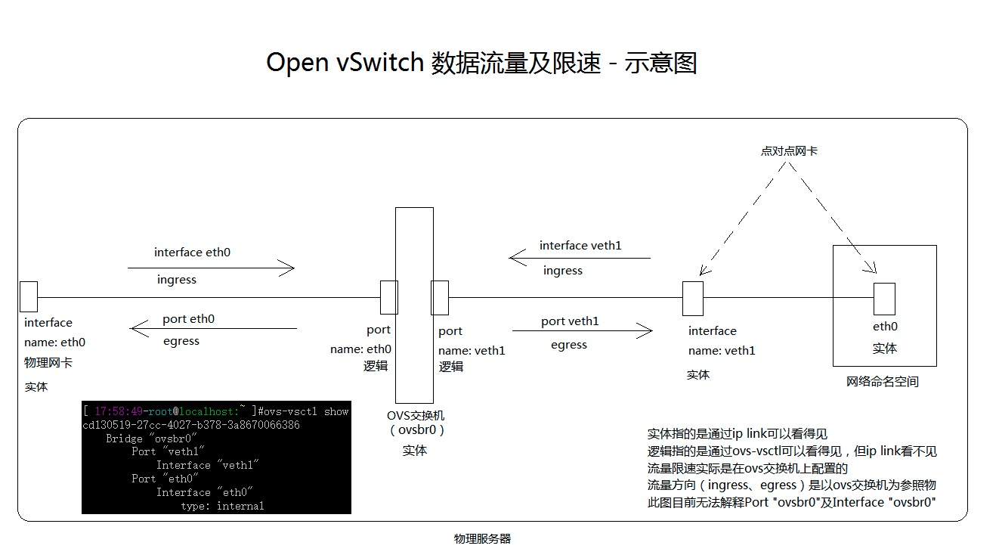

2. ovs数据流量及限速

在ovs里，对port只有egress限速，对interface只有ingress限速
参考：http://openvswitch.org/support/dist-docs/ovs-vswitchd.conf.db.5.html
ingress_policing_rate就是带宽入口限速，超过的丢包处理
ingress_policing_burst 在ingress_policing_rate之上的入口突发流量限制，该值最少也要等于该interface的MTU值，最好设置为ingress_policing_rate的>=10%，建议为10%（对TCP很重要，TCP需要对丢包作出反应，而且设置为10%后tcp流量的上限才会更接近ingress_policing_rate值）